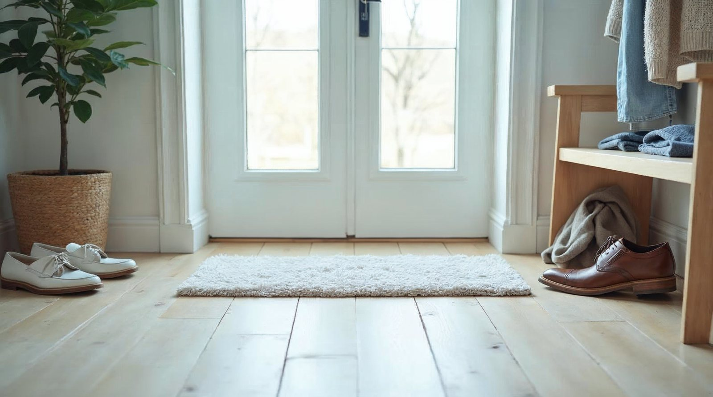
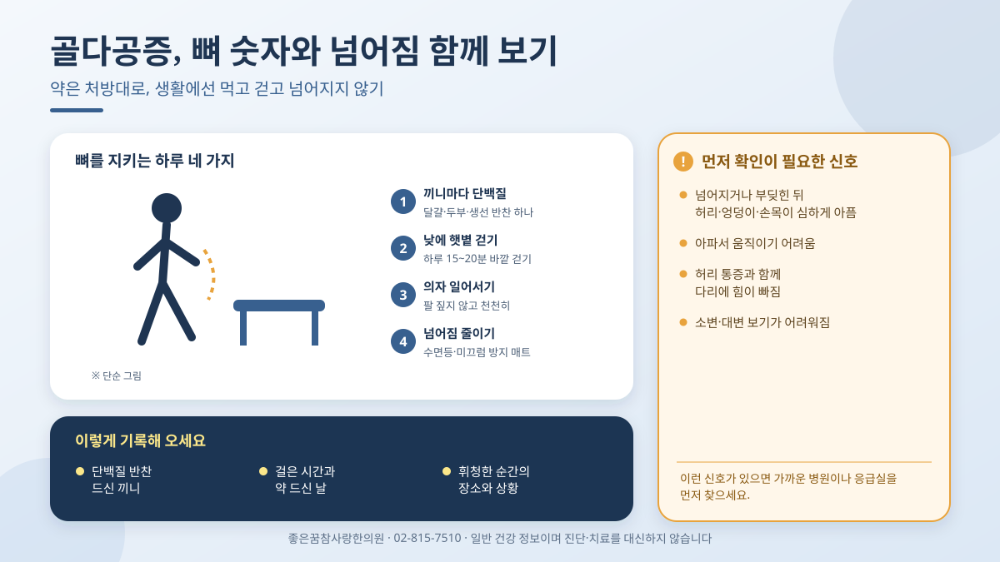

이종호 한의사 감수좋은꿈참사랑한의원 대표원장 (한의사 면허번호 19769)발행 2026-11-26 · 수정 2026-11-26
이 글의 차례
건강검진 결과지를 받아 든 저녁, 낯선 단어 하나가 눈에 걸립니다. 골밀도 검사 칸에 적힌 '골다공증'. 아픈 곳도 없고 어제와 똑같이 걸어 다녔는데, 뼈가 약해졌다니 실감이 나지 않습니다. 계단을 내려가다 괜히 난간을 한 번 더 잡게 됩니다.
진료실에서도 이런 말씀을 자주 듣습니다. "아프지도 않은데 정말 약을 먹어야 하나요?" "뼈에 좋은 걸 먹으면 되지 않을까요?" 골다공증은 느낌이 없어서 더 헷갈리는 병입니다. 불편이 없으니 관리가 늦어지기 쉽고, 반대로 결과지 숫자 하나에 지나치게 겁을 먹기도 합니다.
골다공증 그 자체는 통증을 만들지 않는 경우가 많습니다. 문제가 되는 것은 약해진 뼈가 작은 충격에도 부러지는 일입니다. 집 안에서 미끄러지거나, 손을 짚고 넘어지거나, 무거운 것을 들다가 허리를 숙이는 순간에도 손목, 허리뼈, 엉덩이뼈에 금이 갈 수 있습니다.
그래서 저는 골다공증을 '뼈의 숫자'와 '넘어지지 않는 생활' 두 갈래로 나눠 말씀드립니다. 뼈의 숫자는 내과나 정형외과, 가정의학과에서 검사와 약으로 챙기고, 넘어지지 않는 몸과 집은 생활에서 함께 만들어 가는 것입니다. 한의원은 그 생활 쪽을 함께 들여다보는 자리입니다.
골다공증은 어떤 상태인가요
뼈는 한번 만들어지면 그대로 있는 돌 같은 것이 아니라, 오래된 부분을 허물고 새로 채우는 일을 평생 되풀이하는 살아 있는 조직입니다. 젊을 때는 채우는 속도가 허무는 속도를 따라가지만, 나이가 들수록 허무는 쪽이 앞서면서 뼈 속이 점점 성글어집니다.
골다공증은 이렇게 뼈의 양이 줄고 속 구조가 엉성해져서 작은 충격에도 부러지기 쉬운 상태를 말합니다. 겉모습은 그대로여도 뼈 안쪽의 그물 같은 구조가 가늘어지고 구멍이 커진 모습이라고 생각하시면 됩니다.
골밀도 검사 결과지에는 보통 T-점수라는 숫자가 적혀 있습니다. 같은 성별의 젊은 성인 평균과 비교한 값인데, 일정 기준보다 낮으면 골감소증, 더 낮으면 골다공증으로 나눕니다. 다만 숫자만으로 모든 것을 정하지는 않고, 나이와 골절 경험, 가족력, 드시는 약 등을 함께 보고 치료 여부를 정합니다.
왜 뼈가 약해질까요
가장 큰 이유는 나이와 호르몬의 변화입니다. 여성은 폐경 무렵 뼈를 지켜 주던 여성호르몬이 줄면서 몇 년 사이 뼈의 양이 빠르게 줄어들 수 있습니다. 남성도 나이가 들면 서서히 줄어들고, 여성보다 늦게 알아차리는 경우가 많습니다.
생활도 영향을 줍니다. 식사량이 적어 단백질과 칼슘이 부족한 경우, 햇볕을 쬐는 시간이 거의 없어 비타민 D가 모자란 경우, 몸을 거의 움직이지 않는 경우, 담배와 잦은 술, 지나치게 마른 체형이 뼈를 약하게 만드는 쪽으로 작용합니다.
드시는 약이나 다른 병이 원인이 되기도 합니다. 스테로이드를 오래 드신 경우, 갑상선이나 부갑상선 기능에 이상이 있는 경우, 위 절제 수술을 받아 흡수가 줄어든 경우, 류마티스 관절염처럼 염증이 오래 이어지는 경우에는 뼈가 더 빨리 약해질 수 있습니다. 이런 이야기는 처방한 선생님께도 꼭 알려 주세요.
허리 통증이나 관절염과는 어떻게 다른가요
허리가 아프면 "뼈가 약해서 그런가요?" 하고 물으시는 분이 많습니다. 하지만 골다공증만으로는 대개 아프지 않습니다. 평소의 허리 통증은 근육과 인대, 디스크, 관절 쪽 문제인 경우가 더 흔합니다.
다만 골다공증이 있는 분이 가벼운 충격 뒤에 허리 한가운데가 콕 찌르듯 아프고 돌아눕기가 힘들다면, 허리뼈가 눌려 주저앉는 압박골절일 수 있어 영상 검사로 확인하는 것이 먼저입니다. 무릎이나 손가락 마디가 붓고 시큰한 것은 관절염 쪽이고, 골다공증과는 다른 이야기입니다.
키가 예전보다 줄었거나, 등이 점점 굽어 보인다는 말을 들으셨다면 모르는 사이 허리뼈에 작은 압박골절이 생겼을 가능성도 있습니다. 이런 변화는 골밀도 검사를 받는 병원에 함께 말씀하시면 검사 계획을 정하는 데 도움이 됩니다.
내 생활은 뼈 쪽으로 어떤가요
아래 항목을 한번 짚어 보세요. 해당하는 것이 많다고 해서 걱정만 하실 일은 아니고, 생활에서 바꿀 수 있는 부분이 어디인지 찾는 데 쓰시면 됩니다.
- 하루에 햇볕을 쬐며 걷는 시간이 거의 없다
- 고기, 생선, 달걀, 두부 같은 단백질 반찬을 자주 거른다
- 우유나 멸치, 뼈째 먹는 생선, 푸른 잎채소를 잘 먹지 않는다
- 최근 1년 사이 넘어진 적이 있다
- 의자에서 일어날 때 팔로 짚어야 일어날 수 있다
- 밤에 화장실에 가느라 여러 번 깨고, 어두운 복도를 걷는다
특히 넘어진 경험은 중요한 단서입니다. 한 번 넘어지신 분은 다시 넘어질 가능성이 높아서, 다리 힘과 균형, 집 안 환경을 함께 살펴보는 계기로 삼으시면 좋습니다.
골밀도 검사는 언제 다시 받나요
골밀도는 몇 주 만에 크게 달라지는 숫자가 아니어서, 보통은 1~2년 간격으로 다시 재는 경우가 많습니다. 약을 시작했거나 바꾼 경우, 골절이 있었던 경우에는 처방한 선생님이 간격을 따로 정하기도 합니다.
검사는 같은 기계, 같은 부위로 재야 비교가 쉽습니다. 병원을 옮기셨다면 예전 결과지를 함께 가져가 보여 주세요. 숫자가 조금 오르내리는 것은 측정의 차이일 수 있어서, 한 번의 결과보다 몇 번의 흐름을 보는 것이 좋습니다.
약을 몇 년 드신 뒤에는 잠시 쉬는 기간을 두는 경우도 있습니다. 이 역시 검사 결과와 골절 위험을 보고 처방한 선생님이 정하는 일이니, 혼자 판단하지 마시고 정기 진료 때 여쭤 보세요.

계절에 따라 더 조심할 때
겨울에는 빙판길과 두꺼운 옷 때문에 몸이 둔해져 넘어지기 쉽습니다. 바깥 활동이 줄면 햇볕을 쬐는 시간도 줄어듭니다. 눈이나 비 온 다음 날에는 바닥이 미끄럽지 않은 신발을 신고, 주머니에 손을 넣고 걷지 않는 것이 좋습니다.
여름에는 땀을 많이 흘려 어지럽기 쉽고, 욕실과 부엌 바닥이 젖어 미끄러운 일이 잦습니다. 물을 나눠 드시고, 욕실에서는 앉아서 씻을 수 있는 의자를 두면 한결 편안합니다.
먼저 이렇게 여쭙니다
처음 오시면 대략 이런 순서로 여쭙니다. 미리 떠올려 오시면 이야기가 수월해집니다.
- 골밀도 검사는 언제, 어느 부위로 받으셨나요?
- 골다공증 약을 드시거나 주사를 맞고 계신가요? 언제부터인가요?
- 최근에 넘어지시거나 뼈가 부러진 적이 있나요?
- 하루 식사는 몇 끼, 어떤 반찬 위주로 드시나요?
- 바깥에서 걷는 시간은 하루 얼마나 되나요?
- 스테로이드, 갑상선 약처럼 오래 드시는 약이 있나요?
골다공증 약 가운데에는 먹는 방법이 까다로운 것이 있습니다. 아침 빈속에 물 한 컵과 함께 드시고 일정 시간 눕지 않아야 하는 약도 있고, 주사로 몇 달에 한 번 맞는 약도 있습니다. 어떤 약을 어떻게 드시는지 알면 생활에서 챙길 부분을 함께 정하기 쉽습니다.
치과 치료를 앞두고 계신 분이라면 드시는 골다공증 약을 치과에도 알려 주세요. 약의 종류에 따라 발치나 임플란트 일정을 조정하는 경우가 있어서, 처방한 선생님과 치과가 함께 알고 있는 것이 좋습니다.
일상에서 먼저 해 볼 수 있는 것
뼈를 위한 생활은 거창하지 않습니다. 먹고, 햇볕을 보고, 움직이고, 넘어지지 않는 것. 이 네 가지에서 하나씩 골라 시작해 보세요.
- 끼니마다 손바닥만 한 단백질 반찬 하나 곁들이기
- 하루 한 번 멸치, 두부, 우유, 요구르트, 푸른 잎채소 가운데 하나 챙기기
- 해가 있는 낮 시간에 15~20분 바깥 걷기
- 의자에서 팔 짚지 않고 천천히 일어섰다 앉기를 몇 번씩
- 밤에 화장실 가는 길에 작은 수면등 켜 두기
- 욕실 바닥에 미끄럼 방지 매트 깔기
움직임은 뼈에 적당한 무게가 실리는 것이 좋습니다. 누워서 하는 운동보다 서서 걷기, 계단 몇 칸 천천히 오르기처럼 내 몸무게를 발로 받는 움직임이 뼈에 자극이 됩니다. 다만 허리를 깊이 숙이거나 비트는 동작, 무거운 것을 바닥에서 번쩍 드는 동작은 허리뼈에 부담이 커서 피하시는 편이 좋습니다.
바닥의 물건을 집을 때는 허리를 굽히기보다 무릎을 굽혀 앉으며 집으시고, 장바구니는 한쪽으로 몰지 말고 양손에 나눠 드세요. 이런 작은 습관이 쌓이면 허리뼈가 받는 부담이 줄어듭니다.
칼슘이나 비타민 D 보충제는 식사량과 검사 결과에 따라 필요한 양이 달라서, 처방한 선생님과 상의해 정하시길 권합니다. 많이 먹을수록 좋은 것이 아니고, 이미 드시는 약에 포함되어 있는 경우도 있습니다.
집 안을 한번 둘러보는 것도 좋습니다. 발에 걸리는 전선, 말려 올라간 러그 끝, 문턱, 어두운 계단, 높은 선반에 둔 자주 쓰는 물건. 넘어짐은 대부분 이런 익숙한 자리에서 일어납니다. 자주 쓰는 물건은 허리 높이로 옮겨 두면 까치발을 들거나 의자에 올라설 일이 줄어듭니다.
골다공증 약을 드시는 분이 챙길 것
먹는 골다공증 약 가운데에는 아침 빈속에 물과 함께 드시고, 일정 시간 동안 눕지 않고 다른 음식이나 약을 드시지 않아야 하는 것이 있습니다. 이 방법을 지키지 않으면 속이 쓰리거나 약이 제대로 흡수되지 않을 수 있습니다. 약 봉투에 적힌 방법을 한 번 더 확인해 주세요.
주 1회나 월 1회 드시는 약은 날짜를 잊기 쉽습니다. 달력에 표시하거나 휴대폰 알람을 맞춰 두면 빠뜨리는 날이 줄어듭니다. 약을 드시며 속이 불편하다면 혼자 끊지 마시고 처방한 선생님께 말씀해 다른 방법을 상의해 보세요.
한의원에서 함께 살필 수 있는 경우
- 골다공증 약을 드시면서 속이 불편하거나 입맛이 떨어진 경우
- 식사량이 적고 기운이 없어 바깥에 잘 나가지 않게 된 경우
- 허리와 등이 늘 뻐근하고 굽어 가는 느낌이 드는 경우
- 다리 힘이 빠지고 걸음이 불안해 넘어질까 걱정되는 경우
- 잠이 얕아 밤에 자주 깨고 화장실을 여러 번 가는 경우
좋은꿈참사랑한의원에 오시면 먼저 아래 '먼저 확인이 필요한' 신호가 없는지부터 봅니다. 그다음 맥을 짚고, 허리와 등의 긴장, 걸음과 일어서는 모습을 함께 살핍니다. 진찰한 내용을 바탕으로 침, 온열 관리, 한약 상담 가운데 지금 상태에 맞는 것을 정합니다.
뼈가 약한 분께는 강한 교정이나 세게 누르는 수기 치료는 하지 않고, 부드러운 방법을 고릅니다. 한약을 상의할 때는 골다공증 약과 함께 드시는 약을 모두 확인하고 신중하게 정합니다. 처방받은 약은 처방한 선생님과 상의 없이 멈추지 않습니다.
한의원 진료는 내과·정형외과 진료를 대신하지 않습니다. 병원에서 골밀도와 약을 챙기고, 한의원에서는 그 사이의 식사와 기운, 몸의 긴장, 넘어지지 않는 몸을 함께 살핀다고 생각해 주세요.
가족이 함께 챙길 수 있는 것
부모님이 골다공증 진단을 받으셨다면 가족이 할 수 있는 일도 많습니다. 집에 들를 때마다 복도와 욕실의 조명, 미끄러운 바닥을 한 번씩 살펴 주시고, 약을 드시는 날짜를 함께 기억해 주세요. 무거운 장보기는 가족이 맡고, 부모님과는 가벼운 산책을 함께하시는 것만으로도 큰 힘이 됩니다.
이렇게 기록해 오시면 상담이 쉬워집니다
2주 정도만 간단히 적어 보세요. 빈칸이 있어도 괜찮습니다.
- 하루 세 끼에 단백질 반찬이 있었는지 표시
- 바깥에서 걸은 시간
- 골다공증 약을 드신 날과 드신 방법
- 밤에 깬 횟수와 화장실에 간 횟수
- 휘청하거나 넘어질 뻔한 순간이 있었다면 그 장소와 상황
넘어질 뻔한 순간을 적다 보면 대개 같은 자리, 같은 시간대가 반복된다는 것이 보입니다. 그 자리를 바꾸는 것이 가장 빠른 대책이 되기도 합니다.
뼈와 오래 함께 가기 위해
골다공증 진단은 겁을 주려는 것이 아니라, 지금부터 조금 더 보살피자는 알림입니다. 약을 챙기고, 끼니마다 반찬 하나를 더하고, 낮에 잠깐 걷고, 밤길에 불을 켜 두는 것. 이번 주에는 이 가운데 하나만 골라 시작해 보세요.
이런 증상은 먼저 확인이 필요합니다
- 넘어지거나 가볍게 부딪힌 뒤 허리·엉덩이·손목이 심하게 아프고 움직이기 어려운 경우
- 허리 통증과 함께 다리에 힘이 빠지거나 소변·대변 보기가 어려워진 경우
이런 신호가 있으면 한의원보다 가까운 병원이나 응급실을 먼저 찾으세요.
함께 읽으면 좋은 글
- 골다공증으로 허리뼈 압박골절이 생긴 뒤 회복기에는 무엇을 살피나요?
- 70대 어르신 집의 욕실과 현관은 낙상을 줄이려면 어떻게 점검하나요?
- 80대 어르신이 의자에서 일어서기 어려워질 때 가족은 무엇을 살펴보나요?
- 체중은 정상인데 인바디에서 근육량이 적게 나왔다면 무엇부터 살피나요?
- 갱년기에 몸이 달라질 때 한의원에서는 무엇을 먼저 묻나요?

여쭙는 것
- 골밀도 검사는 언제, 어느 부위로 받으셨나요?
- 골다공증 약을 드시거나 주사를 맞고 계신가요? 언제부터인가요?
- 최근에 넘어지시거나 뼈가 부러진 적이 있나요?
생활에서 해 볼 것
- 끼니마다 손바닥만 한 단백질 반찬 하나 곁들이기
- 하루 한 번 멸치, 두부, 우유, 요구르트, 푸른 잎채소 가운데 하나 챙기기
- 해가 있는 낮 시간에 15~20분 바깥 걷기
한의원에서 함께 살필 것
- 골다공증 약을 드시면서 속이 불편하거나 입맛이 떨어진 경우
- 식사량이 적고 기운이 없어 바깥에 잘 나가지 않게 된 경우
- 허리와 등이 늘 뻐근하고 굽어 가는 느낌이 드는 경우
먼저 확인이 필요한 신호
- 넘어지거나 가볍게 부딪힌 뒤 허리·엉덩이·손목이 심하게 아프고 움직이기 어려운 경우
- 허리 통증과 함께 다리에 힘이 빠지거나 소변·대변 보기가 어려워진 경우
한눈에 보는 표
| 구분 | 핵심 |
|---|---|
| 여쭙는 것 | 골밀도 검사는 언제, 어느 부위로 받으셨나요? 골다공증 약을 드시거나 주사를 맞고 계신가요? 언제부터인가요? |
| 생활에서 해 볼 것 | 끼니마다 손바닥만 한 단백질 반찬 하나 곁들이기 하루 한 번 멸치, 두부, 우유, 요구르트, 푸른 잎채소 가운데 하나 챙기기 |
| 한의원에서 함께 살필 것 | 골다공증 약을 드시면서 속이 불편하거나 입맛이 떨어진 경우 식사량이 적고 기운이 없어 바깥에 잘 나가지 않게 된 경우 |
| 먼저 확인이 필요한 신호 | 넘어지거나 가볍게 부딪힌 뒤 허리·엉덩이·손목이 심하게 아프고 움직이기 어려운 경우 허리 통증과 함께 다리에 힘이 빠지거나 소변·대변 보기가 어려워진 경우 |
자주 묻는 질문
아프지 않은데도 골다공증 약을 먹어야 하나요?
골다공증은 대개 아프지 않다가 뼈가 부러지면서 드러납니다. 약이 필요한지는 골밀도와 나이, 골절 경험 등을 보고 처방한 선생님이 정하니, 궁금한 점은 그 자리에서 충분히 여쭤 보세요.
골다공증 약을 먹으면서 한약을 함께 먹어도 되나요?
드시는 약을 모두 확인하고 신중하게 정합니다. 약 봉투나 처방전 사진을 가져와 주시면 함께 살펴보고, 필요하면 처방한 선생님과 상의하시도록 안내합니다.
골다공증이 있으면 추나나 침 치료는 피해야 하나요?
뼈가 약한 분께는 강한 교정이나 세게 누르는 방법은 쓰지 않습니다. 진찰 뒤 부드러운 침이나 온열 관리처럼 부담이 적은 방법을 고르고, 불편하시면 언제든 말씀해 주시면 됩니다.
칼슘은 많이 먹을수록 좋은가요?
많이 먹는다고 더 좋은 것은 아닙니다. 식사로 드시는 양과 검사 결과에 따라 필요한 양이 다르니, 보충제는 처방한 선생님과 상의해서 정하시길 권합니다.
어떤 운동이 뼈에 좋은가요?
서서 걷기처럼 몸무게가 발에 실리는 움직임과 의자에서 일어섰다 앉기 같은 다리 힘 운동이 무난합니다. 허리를 깊이 숙이거나 비트는 동작, 무거운 것을 번쩍 드는 동작은 피하시는 편이 좋습니다.
좋은꿈참사랑한의원은 재진 때 지난번 이야기부터 이어서 여쭙니다. 진료시간과 예약은 오시는 길에서 확인하세요.
어디서 상담받을 수 있나요?
좋은꿈참사랑한의원은 서울 동작구 만양로2길 2 신성빌딩 3층·5층(서울 동작구 상도동, 7호선 상도역 3번 출구 근처)에 있습니다. 한의사 3명(이종호 대표원장, 조영기 수석진료원장, 정원영 진료원장)이 진료합니다. 진료시간은 평일 09:30~20:00(점심 13:00~14:00), 토·일·공휴일 09:30~15:00이며, 방문 전 전화로 확인을 권합니다. 예약은 네이버 예약, 카카오톡 상담, 전화 02-815-7510로 받습니다.
이 글은 일반적인 건강 정보이며 개인의 진단이나 치료를 대신하지 않습니다. 증상이 있거나 복용 중인 약이 있다면 진료를 통해 확인하세요. 치료 효과는 개인마다 다를 수 있습니다.
작성 기준: 일반적으로 알려져 있는 건강 정보를 참고해 정리했습니다(대표원장 감수). 증상 기록은 1~2주 동안 하루 1회, 비슷한 시간에 적어 오시면 지난 상태와 비교하기 쉽습니다.